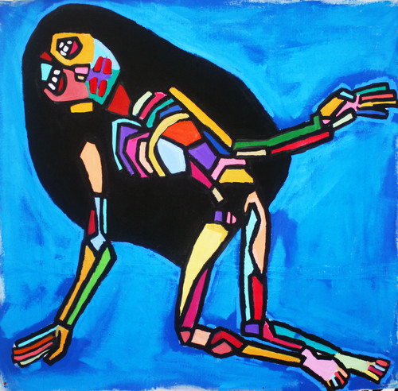
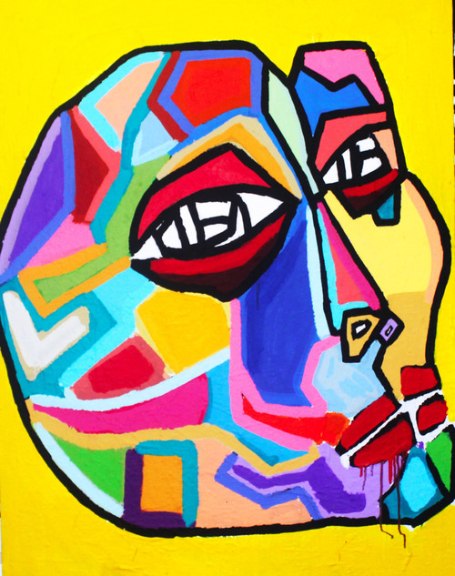

Arnold Butler
Arnold R. Butler is (a) moTHa+ fUcken aRT-iSt hailing from Atlanta, Georgia. His art is a gathering of unfiltered emotion expression. His mission as a creator is simple: the focus is the work and the emphasis is impressing the universe, not man or money. His work reflects his views, neither overshadow one another. He approaches the canvas with pure intentions, and a honest heart. Butler came to painting for therapy and is constantly manifesting his prayers through the paintbrush. With each stroke of the brush and rhythm of love in his heart, his art becomes much less an object and is much more.
His paintings are contained yet baroque. No stroke is arbitrarily done or meant for wonder. Each detail is perfectly crafted cleverly. His use of color is the magnifier of the grandiose energy of each piece. Using warm yet vibrant shades of familiar earth tones: yellow, red, and blue keeps the eye flowing from the foreground and background of the piece. It seems keeping in tune with a non-impressive energy, the art is focused on nothing but being what it was created for: a therapeutic prayer session.
amfm: You said you got your passion for art growing up watching your father make art. Whatwas it like growing up having an artist as a parent? How did he approach his art and how did that influence you? What are some of your earliest interactions with art?
arnold butler: My father painted in secret. That was a passion that he kept to himself and revealed it only during the late night hours. As a child, I would sneak out of my room and watch silently as he would embellish the misgivings of his life on a bare canvas as if confessing his life of sins to a complete stranger. At that time, I couldn’t quite grasp the content of his work; however, I would always bear witness to the revelation of color he used to make his visual message more direct. My father painted as if he tried to communicate with a realm of reality that only existed to him. My father never taught me how to paint - he rarely shared his work. He taught me his temperament and approach. He felt that my life experiences would truly teach me how to convey my visual message.
amfm: In what way is making art for you a "lifestyle?" Why do you consider yourself not an artist, but rather a storyteller? What is the difference between making art and telling stories to you?
butler: I really don’t want to be a cliché; however, ART is my lifestyle. ART isn’t a costume I put on when people are watching and then take off when the attention is elsewhere. I live and breathe this ART shit because it saved my life and for that reason alone, I’ve dedicated my entire life to ART. I reference myself as a storyteller because I do more than paint pictures. I’m telling a never-ending love story and I use a plethora of mediums to convey that message. I like to differentiate my mediums to access every emotional point of the viewer.
amfm: You said you came to art as a patient in need of therapy. What have you uncovered or learned about yourself through your art?
butler: As of now, I’ve only uncovered 3 truths: 1. “In order to truly LIVE, you must master the art of forgiveness.” 2. “The most reclusive people have the brightest smiles” 3. “Fuck fear. Fuck being regular.”
amfm: "Make your art personal so that it becomes universal," is one of your favorite quotes in relation to art. Why does this sentiment speak to you?
butler: That’s some advice Radcliffe Bailey gave me a few years ago. All you need is honesty to make a beautiful piece of ART. I’ve always approached ART as a spiritual practice and the same sincerity a sinner needs to confess is identical to the sincerity I use to compose my palette board.
amfm: You said that people are cool, but they don't inspire you. Yet, your work deals largely with images of people, figures, and abstract faces. How do you explain the juxtaposition of your thoughts and feelings towards "people," and the people that you portray? Who are these characters you create?
butler: These aren’t people that I paint. These are the spiritual entities living within my emotions, insecurities, and vulnerabilities. As part of my therapeutic process, I take these various, sometimes-ugly emotions and paint them with the most beautiful face. Ultimately, I paint my fears into my most beautiful dreams.
amfm: If art is your spirituality, what "deity" do you worship?
butler: ART is my lifestyle. Nature is my God. I worship the deity I see in the mirror. - aB
|  |  |
For more from Arnold Butler:
photo credits: arnold butler
introduction by: marissa sallie